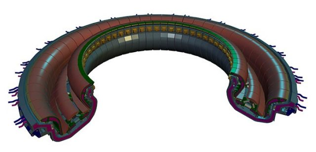

The divertor of the ITER machine, comprising of 54 individual segments
Here's an empowering thought. Whilst it may only be for a few seconds, the inside of a tokamak often reaches temperatures of 150 million degrees, making it one of the hottest places in the
observable universe during operation. Holding the plasma in this condition however is no simple task, and there exists various processes which lead to significant
cooling of the plasma. One of the key obstacles that has to be overcome to achieve large scale commercialisation of fusion power is to limit the effects of such processes to as great an extent as possible, thereby retaining a maximally hot and efficient plasma.
To start, we'll look at examples of the aforementioned cooling processes and will then delve into the geometry of the magnetic field in a tokamak. This will then be brought together to introduce the
divertor and limiter, two remarkable engineering solutions that aim to retain the high temperature of the fusing plasma confined by the tokamak.
Impurities
As implied above, the particles in a tokamak reach tremendous speeds while confined, of the order 106 ms-1. The possession of such energy
enables plasma constituents to displace atoms in the reactor walls when the two collide (known as 'sputtering'), and some of these displaced nuclides find themselves entering the plasma. These estranged atoms, which generally have
a much greater atomic number than the reactor fuel, are almost always seen as undesirable partly due to a phenomenon known as bremsstrahlung (braking) radiation. In short, this
is the electromagnetic radiation emitted by a charged particle when it is subject to a resultant force and it can be shown that the power loss due to bremsstrahlung is proportional to the
square of the particle's charge. To put this into perspective, we see that the power losses of a unit mass of tungsten (a common plasma impurity) purely due to bremsstrahlung radiation will be roughly 5500 times
greater than that of a unit mass of deuterium under the same conditions. It is also seen that impurities of high atomic number
do not fully ionise in the plasma, becoming a further source of radiative losses due to the constant excitation - emission - de-excitation cyle.
Evidently, the energy yield of a tokamak depends on how succesfully impurities can be removed and it turns out that the magnetic field inside our tokamak can be manipulated to help achieve this, which we will
see now.
BREMSSTRAHLUNG AS A FUNCTION OF Z NUMBER? Pg 230 book.
Flux Surfaces
The Magnets page of this site provides a description of the various magnetic fields employed to bound a plasma inside the tokamak, however
if chosen carefully, the fields can also assist in the mitigation of impurity effects. Using the magnetohydrodynamic (MHD) model which
provides both an accurate and tractable description of electrically conducting fluids, it can be seen that
there exist two distinct classes of field lines in the plasma confined by a tokamak, closed and open field lines.
Figure 2 depicts the cross section of a D-shaped plasma, with the closed field in blue and the open field in red. Of course
our tokamak is a 3 dimensional machine, and the closed field lines form closed, nested surfaces when we rotate the cross section by 2π radians in the toroidal
direction, which are known as closed flux surfaces. The open field lines similarly form open flux surfaces.
The reason this is important is because the particles exhibit cooperative behaviour when subject to such a field. In particular, the guiding centre of
the gyration of a particle remains ON a flux surface, with little tendency to move radially outward/inward to another such surface (except due to collisions).Therefore,
if a particle finds itself on an open flux surface (which impurities often do as they are sputtered from the wall), it will most likely remain there until
the surface intersects with the reactor wall. The points where open flux surfaces intersect with the wall can be specially designed to remove impurities and this finally brings
us onto the divertor and limiter.